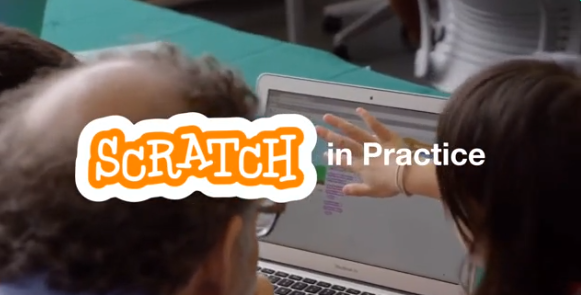
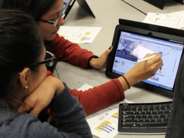

search

markunread_mailbox
Scratch'a Başlangıç!
In February, we discussed ways to help students get started with Scratch. Learn about strategies for getting started from the Scratch Team and educators around the world!Lily ve Carmelo bu ayın temasını tanıtıyor.
Atölye
Bir Karakteri Canlandır
Here’s a fun and easy way to help students start creating with Scratch.
